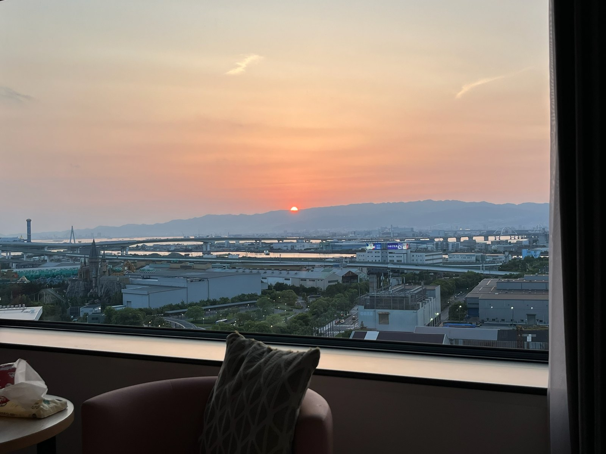

호주 · 2026
호주 · 20262026. 9. 29. — 10. 8. · 8박 10일
우리 가족, 호주 여행
시드니 · 골드코스트 · 브리즈번
시드니 항구에서 시작해 골드코스트의 바다를 지나 브리즈번까지. 세 도시에서 보낸 우리 가족의 시간을 만나보세요.
호주 여행 기록 보기 ↗우리 가족의 작은 여행 아카이브
낯선 풍경 속에서 함께 웃었던 순간들.
우리 가족의 여행을 한 장씩, 한 이야기씩 모아갑니다.
여행이 끝나도, 이야기는 계속되니까
바쁘게 지나간 여행도 기록으로 남기면
언제든 다시 꺼내 볼 수 있는 추억이 됩니다.
이곳은 우리 가족이 함께 채워가는 여행 기록장입니다.
차곡차곡 쌓이는 발자국
호주 · 20262026. 9. 29. — 10. 8. · 8박 10일
시드니 · 골드코스트 · 브리즈번
시드니 항구에서 시작해 골드코스트의 바다를 지나 브리즈번까지. 세 도시에서 보낸 우리 가족의 시간을 만나보세요.
호주 여행 기록 보기 ↗
일본 · 20252025 · 일본 오사카
유니버설 스튜디오 재팬
창밖으로 펼쳐진 공원의 풍경, 붉게 물든 저녁 하늘, 불빛이 켜진 입구까지. 사진으로 남긴 오사카의 하루를 펼쳐봅니다.
오사카 여행 기록 보기 ↗다음 여행은 어떤 이야기로 남을까요? 새로운 기록을 천천히 채워갈게요.
사진 한 장에 담긴 기억
호주 여행을 여는 대표 풍경 사진
이 사진첩에는 공개 가능한 대표 풍경만 담습니다. 가족의 비공개 사진은 포함하지 않습니다.
우리끼리 간직할 소중한 순간
가족만의 사진과 이야기는 별도의 비공개 앨범에 보관합니다.
현재 이 사이트에는 비공개 앨범이나 가족 사진이 연결되어 있지 않습니다.